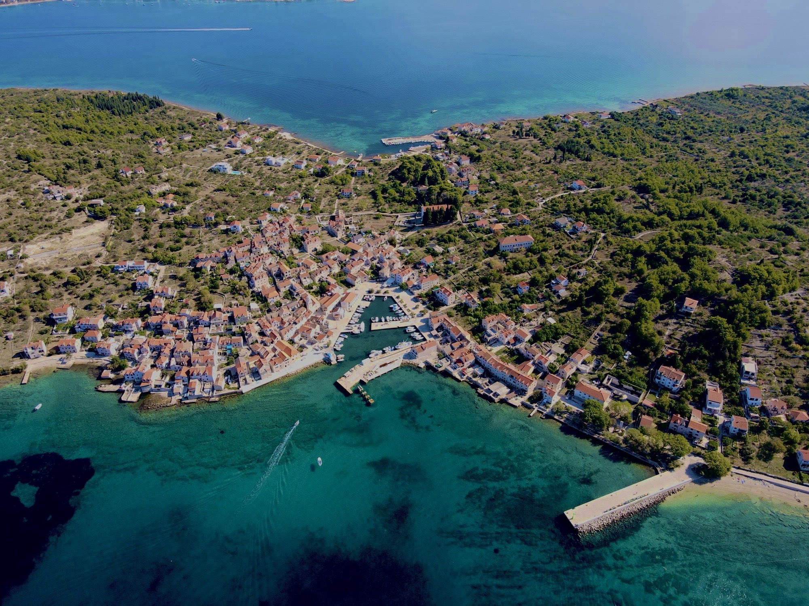
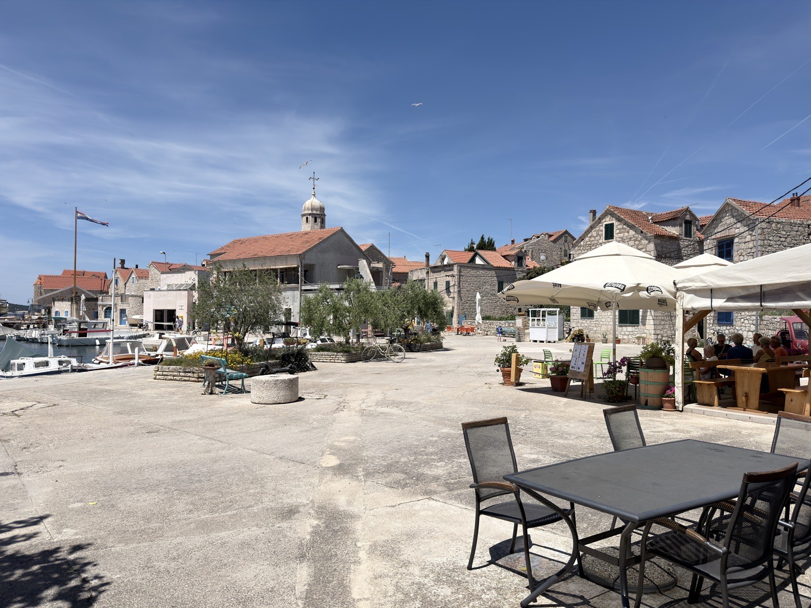
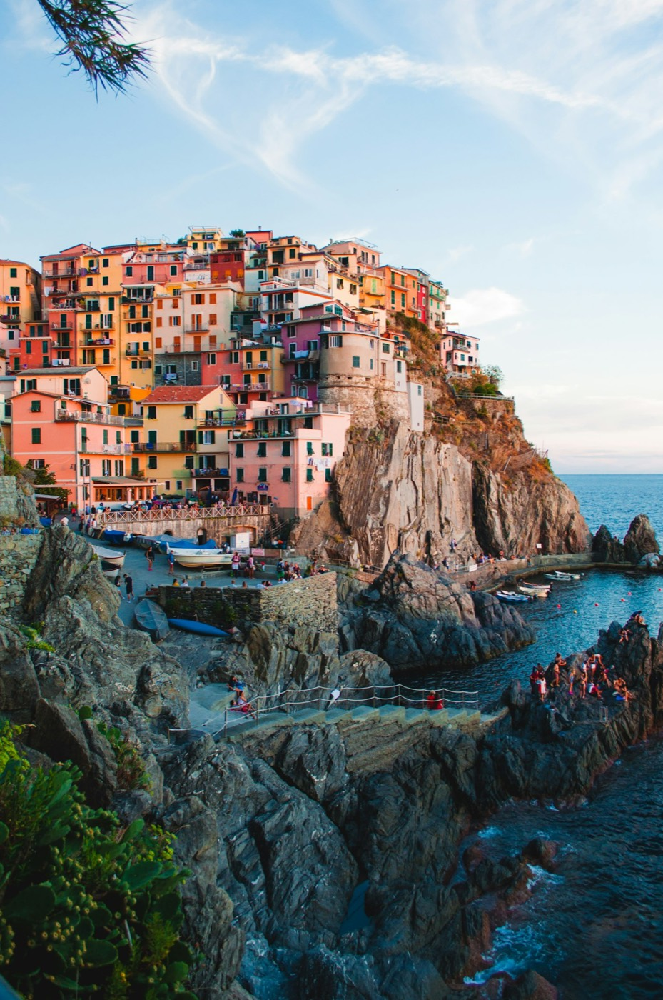
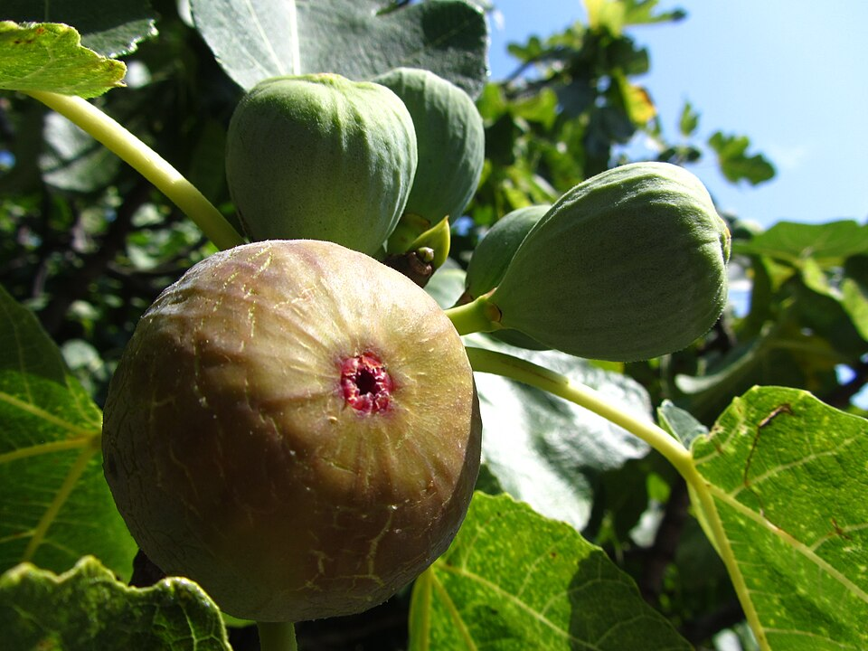
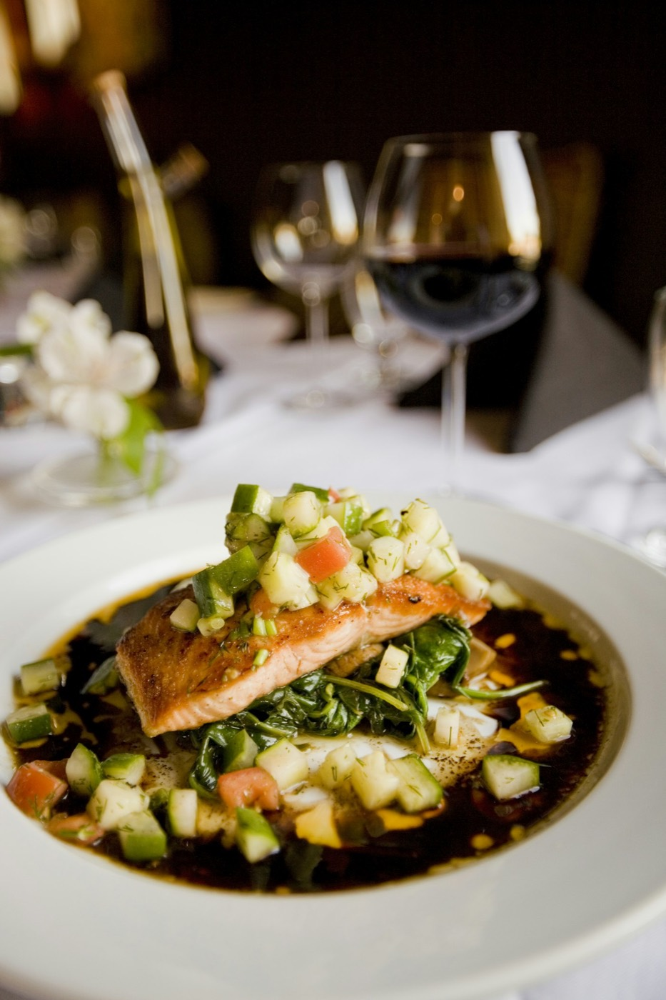

Konoba Bare
Otok bez automobila. Riba iz mora, ulje s našega kamena,
smokva s druge strane zida — i vrijeme koje se ne žuri.
Život se ovdje mjeri plimom, a ne satom.
Prvić je malen otok bez cesta i automobila — dođe se trajektom, a dalje se hoda. Kamene kuće naslonjene jedna na drugu, ribarske barke, masline i smokve, tišina koju prekida samo zvono crkve i more.
Bare je konoba toga ritma. Bez buke i bez žurbe. Kuhamo ono što nam more i otok daju toga dana, posluženo onako kako se servira u kući — iskreno, toplo, bez ukrasa koji ništa ne znače.
— otok Prvić, domovina Fausta Vrančića

Otok na kojem je vrijeme stalo
Već u srednjem vijeku Prvić je bio utočište šibenske aristokracije — mjesto kamo se bježalo od gradske vreve i od kuge s kopna. Plemićke obitelji Tavelić, Divnić, Šižgorić i Draganić-Vrančić gradile su ovdje ljetnikovce, a renesansni dvor obitelji Draganić-Vrančić stoji u Šepurinama i danas.
Stoljećima kasnije otok radi po istom receptu. Nema automobila — dođe se trajektom, a dalje se hoda. Kamene kuće naslonjene jedna na drugu, strme kalete, zvono crkve i more koje sve nadglasava. Ovdje se ne dolazi slučajno — dolazi se jer se traži upravo ovaj mir.
Bare je obiteljska konoba, ovdje od 2008. Kroz cijelu godinu vrata su otvorena kao caffe bar — mjesto gdje otok uspori uz kavu i more pred sobom. Ljeti postajemo konoba i pizzeria, za stolove pune gostiju koji su trajektom došli po taj isti mir.
Na stolu su hladne plate mora — slane srdele, marinirani inčuni, dimljena tuna, kuhana palamida i sabljarka, domaća riblja pašteta — uz pršut, sir i masline. Hobotnicu i meso ispod peke spremamo na narudžbu, dan ranije, jer dobre stvari ovdje znaju pričekati. A za dulji stol i cijelu obitelj — tu je i pizza.
Dobrodošli u našu konobu — i u naš otok.
Boje otoka






Pronađite nas na otoku.
Adresa
Prvić Šepurine, otok Prvić
Šibensko-kninska županija, Hrvatska
Trajekt
Otok Prvić nema automobila. Dolazi se redovnom trajektnom i brodskom linijom iz Šibenika i Vodica do Prvić Šepurina. Od pristaništa do konobe — kratka šetnja kalama.
Radno vrijeme
Sezonski, svaki dan: 12:00 – 23:00
Izvan sezone i za veće stolove — javite se telefonom, uskladit ćemo s rasporedom trajekta.
Rezervacije
Telefon: +385 22 448 094
Konoba Bare · Prvić Šepurine, otok Prvić
Klikom se učitava Google Maps karta.